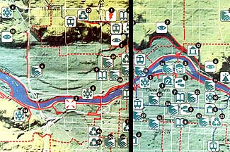

COURTESY OF GREEN MAP SYSTEM
All green maps?including Sustainable Calgary 2001's Calgary, Alberta, green map shown above?use a set of icons developed by collaborators around the world. A sampling of the 125 icons developed so far are shown at the top of each page of this story.